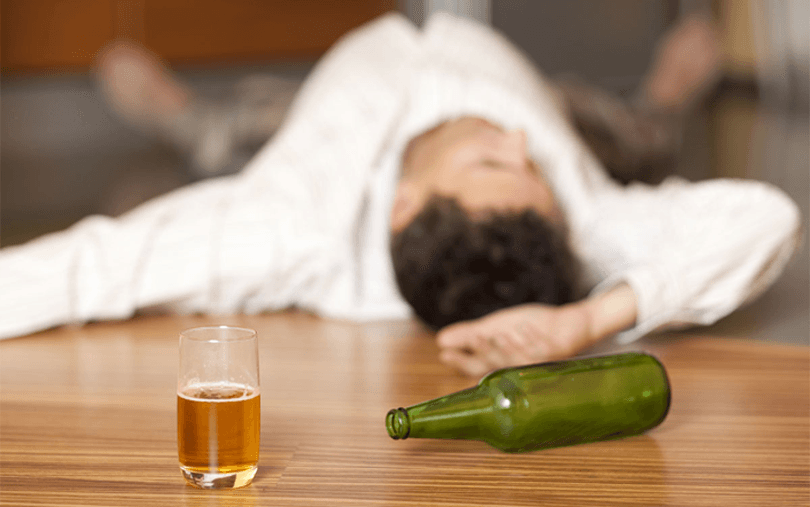

Спасих мъжа си от пиянство за един месец
Едно много откровено писмо на една наша читателка.
Всички материали се публикуват анонимно! С уважение, администраторите на сайта "Народни средства"”
Моята житейска история е за това, как спрях да завися от мъжа си-пияница. Това не е история за развод. Ще ви кажа как спасих семейството си от ужасно проклятие.
Всичко пропи!
Както и при всички, опасната болестта се е разпространи не изведнъж, а постепенно. Женени сме от 15 години. Преди 7 години сама поставих на мъжа си диагнозата - алкохолик.. Алкохолът ставаше все повече, а от моя любим оставаше все по-малко. Алкохолизмът почти погълна цялата му душата, тялото, разум. Ракията почти успя да унищожи семейството ми.
Във всеки един момент може да похарчи парите, спестени за почивка или за дрехи на сина ни. Всичко изкарано криех. Той все пак ги намираше и изпиваше. Постоянно го заплашваха, че ще го уволнят от работа. Преди 2 години най-накрая го уволниха. Той обеща, че ще намери друга работа. Аз се надявах, вярвах, че «скоро всичко ще се оправи и ще бъде отново добре, както по-рано, преди сватбата...». Той отиваше да търси работа всяка сутрин и се връщаше вечер с нищо и задължително пиян.
Да говориш с пиян — все едно да говориш на стената.
Издърпах своят пиян съпруг от поредното пиянство, мъкнах мъртвото му тяло върху себе си към вкъщи, вкъщи му се карах, призовавах го да се опомни. Сутринта го поих със саламура. Заключвах го вкъщи, за да не се напие отново. Съжалявам, понякога наистина сама ходих до магазина, за да му купя ракия. Аз просто исках да видя усмивката му. Понеже без алкохола той беше като умрял. След 2 години такъв живот разбрах. Не мога повече така!
Развод?
Предадох се. Постоянните караници, неговото пияно лице ми бяха омръзни до смърт! Аз реших, че ние със сина ми ще бъде по-добре без този пропаднал човек, който ни краде.
Но аз си спомнях времето, когато той беше внимателен, работещ. Обожаваше ни със Сергей. Смъртта на майка му го съсипа. Може би, аз също съм малко виновна, не успях да му окажа нужната подкрепа. Но аз търпях цели 7 години, мъкнах го върху гърба си! Нямах повече сили. Подадох молба за развод.
Трезвен поглед
Когато му показах бумагите, той беше шокиран. Осъзнал, че живота му рухва. Казах му, че вземам Сергей и отивам при майка си. Какво само започна тогава! Падна на колене, молеше ме, искаше да му простя! Кълнеше се, че повече няма да пие и капка няма да тури в устата си. Такова отчаяние в очите му никога не бях виждала. Простих му! Повярвах му! Той не пи цели 2 седмици. После дойде рождения ден на брат му. И всичко започна отначало…
Но тези 2 седмици ми върнаха любовта и надеждата. Осъзнах колко много обичам съпруга си, какъв чудесен баща е, когато е трезвен. Че при нас него в леглото всичко е наред. Реших да направя ВСИЧКО възможно и, ако не успея, само тогава вече да го изоставя.
Лек
Трябваше ми такова средство, което със сигурност ще помогне.. За вичките тези години много неща изпробвахме. Учейки се от грешките си, съставих следните искания към лечението:
1. Никакво кодиране (преди 5 години го заведох при енкодер — просто направих по-богат поредния шарлатанин. Мъжът ми издържа 3 месеца и започна да пие в 10 пъти повече)
2. Без той да знание, за да не заподозре нещо (Опитах да му дават хапчета от алкохолизъм — съпругът ми отказа да ги пие, направи голям скандал. Троших ги и му ги сипвах в супата, но той почувства вкуса, счупи чинията, и едва не ме наби. Ето защо търсих именно капки, БЕЗ ВКУС!))
3. Безопасно (Страхувам се от черна магия, баене. Сигурна съм, че човешката душа се променя, подтиска се волята. Никога на съм ходила по бабички и Вас не съветвам)
Търсих в интернет, четох разна литература, съветвах се с приятелките. В крайна сметка, се натъкнах на точното средство. Руско, 100% натурално, одобрено от лекарите. В състава му се съдържат специални билки. Възстановяват черен дроб, бели дробове, стомаха и др. И най-важното - предизвикват трайно отвращение към алкохола.. Реших да рискувам. Започнах да му сипвам в храната по 10 капки 3 пъти на ден. Те не миришат, нямат вкус и цвят. Това е, което ми трябва!
Първият ефект започна да се проявява още на 4-ия ден. След хранене мъжът ми си наля една чашка с ракия и се изкриви като, извинете, гъз на старата баба. По-рано на лицето му се изписваше блаженство, а сега ракията явно не му беше вкусна! Побягна в тоалетната, предизвика повръщане...
Няма да Ви разказвам, как се "мъчеше", всеки път, след като се опита да пие. Той сам не разбираше защо от алкохола не му ставаше хубаво, а на обратно - лошо. Гадеше му се, дори само от една глътка. Глава го болеше. Като че изведнъж го хващаше страшен махмурлук. Той рано се прибираше от почерпките, веднага лягаше да спи. Нищо не ми казваше. Виждах, че му се обаждат, се го викат да се почерпят", а той им отказва.
Така мина един месец. На рождения ден на Сергей се бяха събрали гости. Всички пият, моят не пие.. Гледа на чашата, а в очите му - страх. Каза на всички, че временно е спрял. Но аз знаех, че това е завинаги. През нощта, когато лежахме в леглото, не издържах. Питам го, ти защо не пи днес? Той помълча и каза: аз своето вече съм изпил. Здравето ми свърши. И заспа.
Година без ракия
Ако кажа, че съм щастлива, все едно нищо не съм казала. След преживяния ад - настъпи почти рай. Около година той не пие, намери си добра работа. Довършихме ремонта, всичко в къщи е ново, мебелите, кухнята. Мъжът ми започна да води сина ни на тренировки, много време прекарва със семейството. Появи се блясък в очите. Дори не си спомня за ракията и приятелите си по чашка. Такава е моята история. Ако имате в семейството си алкохолик, опитайте начина, който ми помогна. На този сайт ще научите повече. Желая на всички сплотено семейство! Никога не губете надежда!
Евгени Петров
Винаги съм си мислел, че фармакологията по-добра. Досега сам не отидох в клиниката. някакви безкрайни анализи, насам-натам, парите отлетяха като вятър. а полза??? някакви бездарни психолози, глупави вносни хапчета. после пак дойдохме до извода, че трябва да се кодирам. само нерви загубих, но не можах да се откажа от пиенето. сега изучавам народните средства. много искам да спра да пия тази отрова, която ми изгуби половината живот. благодаря за съвета. може би, ще се възползвам.
Дарина Василева
за здравето, разбира се, билките са полезни. важното е, че това е безопасно! знам, за какво говорите, капах на майка ми тези капки. ставаше и лошо, разбира се. много се страхувах. но желанието да я излекувам беше по-силно. Радвам се, че тогава майка ми продължи да се лекува с капките, и вече две години не пие нито капка!
Данаил Борисов
Лекувах дядо си от алкохолизъм, след 30 години пиянство, горе-долу се получи. понякога спираше, но рядко. Сега не пие вече 7, 5 години. пфу пфу пфу
дай Боже всички да се отървете от тази зависимост!
Мария Радева
благодаря за историята и откровеността ви. много добре ви разбирам, при мен историята е подобна. Мъжът ми е пияница. имам малък син. благодаря за рецептата! ние залължително ще опитаме!!!
Албена Симеонова
като че ли разказахте историята на моя живот, само че ние тогава нямахме деца. Също се лекувахме с това билково средство. много хубаво помогна. Спря да пиянства. сега пие много рядко, по празници. контролира се, и аз вече не се страхувам за него. Сега имаме дъщеря и син. Късмет на всички! рецептата работи!
Евгения Манева
Благодаря Ви за съветите. не мога да повярвам, че ще помогне.....всички сте опитали. аз вече
загубих надежда....а изведнъж....надеждата умира последна
Катя Шишкова
а вие опитайте с молитва. капите капките и над водата четете молитва. Осветена чаша или може на св. Вартоломей. Тогава задължително ще помогне!